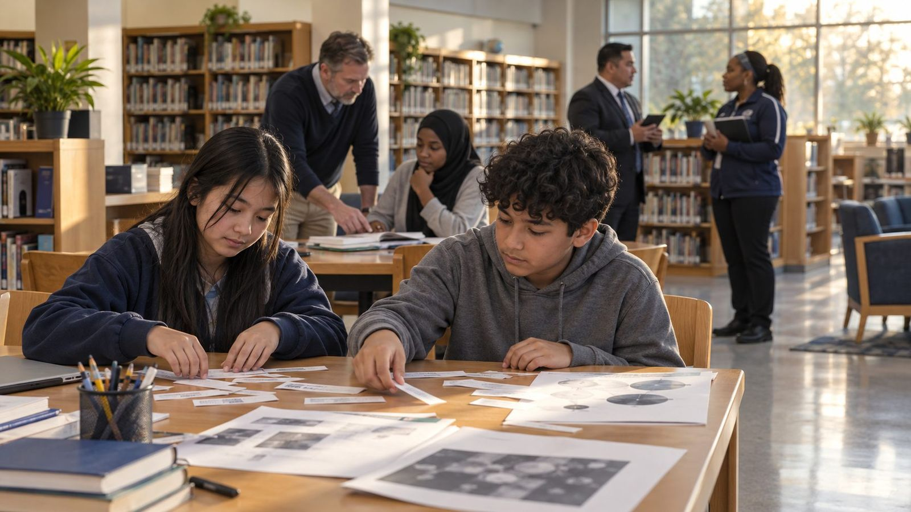
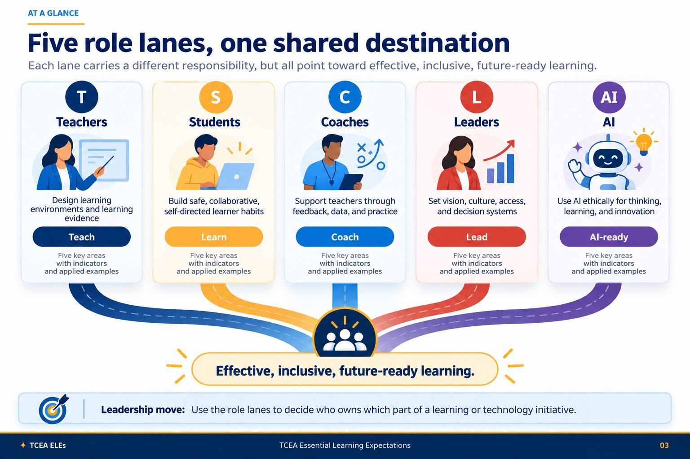
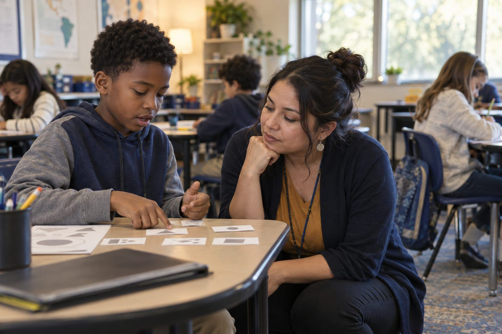
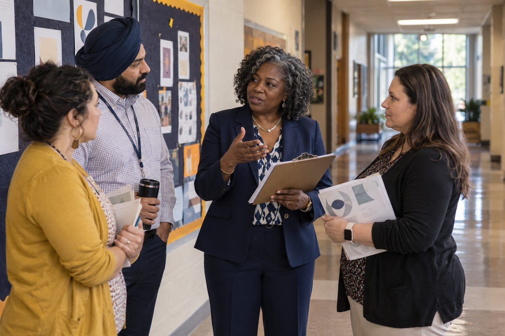
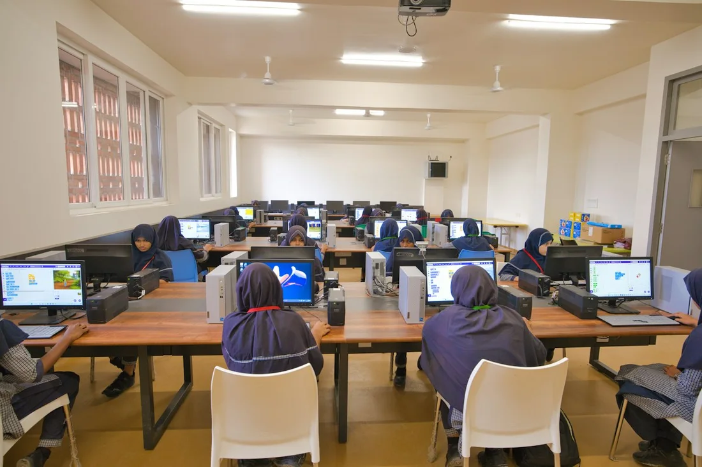
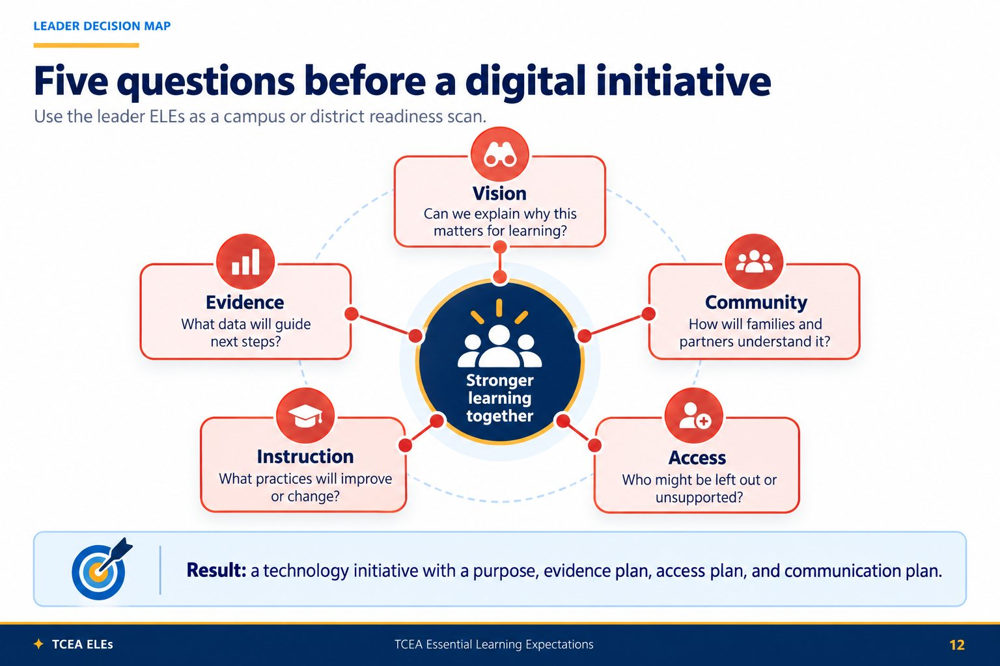
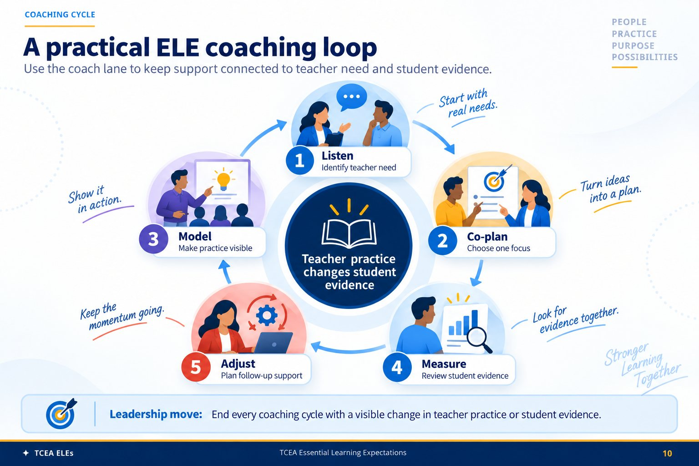
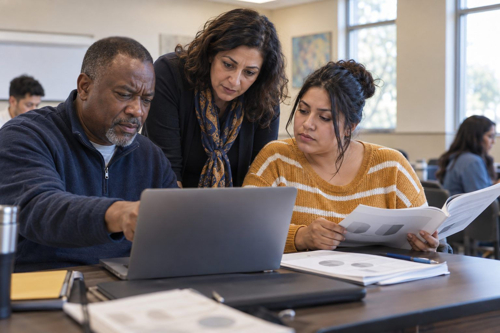
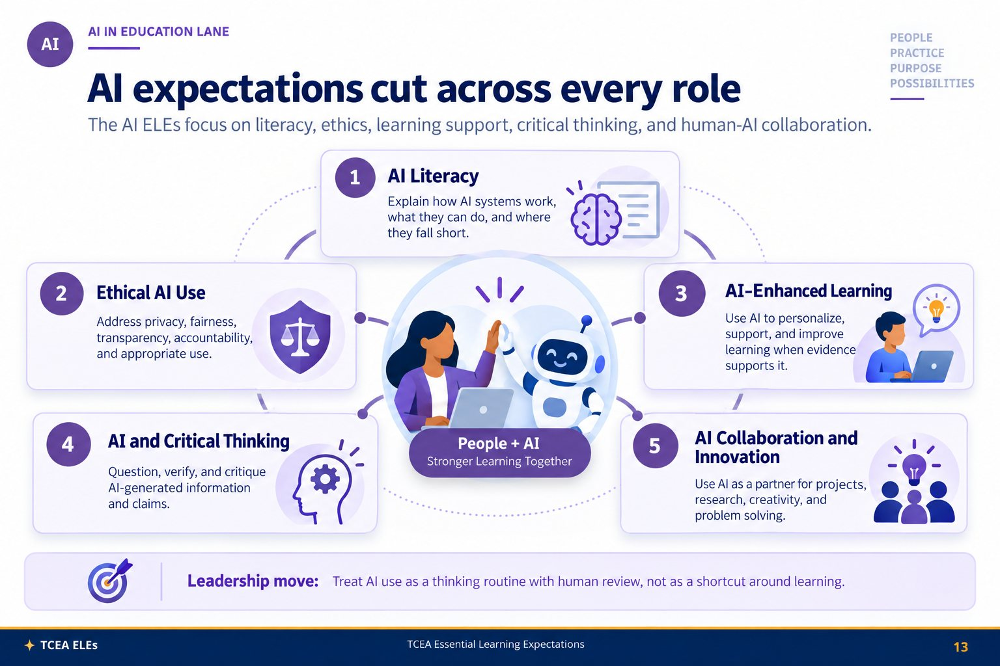
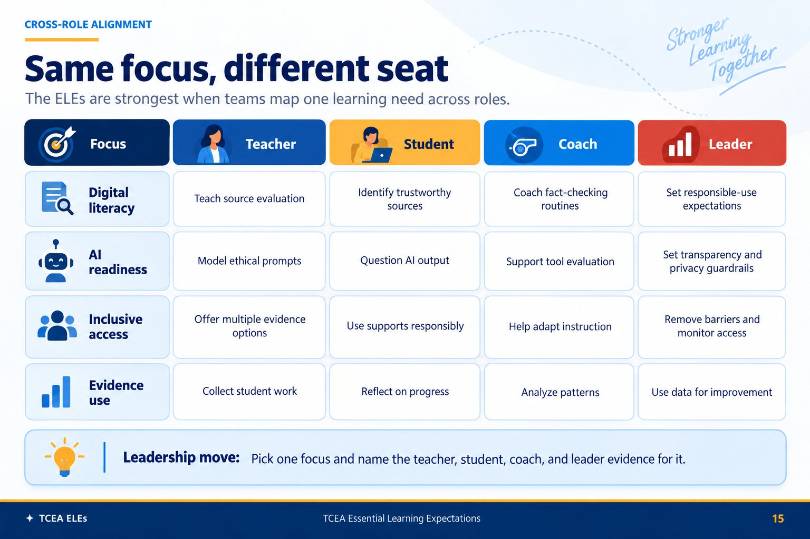

Welcome, and thank you for being here. This session walks through the TCEA Essential Learning Expectations, the ELEs, a shared framework that gives teachers, students, coaches, school leaders, and anyone working with AI the same language for better learning. Over the next half hour we will look at how the framework is built, then move role by role through the indicators, the guiding questions, and a sample activity you can use tomorrow. Everything you see is on the public site at this address, so you do not need to copy anything down. Let us start with the big picture.
Five roles. Five key areas each. Three indicators per area, written in plain first-person voice.
Here is the shape of the whole framework. There are five roles, and the ELEs treat them as partners rather than silos. Within each role there are five key areas, and each area has three indicators, which gives us seventy-five in total. The wording matters. Every indicator begins with "I know," "I can," or "I am aware," so a person can honestly place themselves on a continuum from awareness to capability. Each indicator also comes with a concrete classroom example and a correlation to the TEKS or the TEA Principal Standards, which is what makes it usable in planning and in observation. Keep that I-know, I-can, I-am-aware pattern in mind as we go.

This is the picture I want to anchor the session on. Think of five lanes on the same road. Teachers design learning, students take the lead in it, coaches build teacher capacity, leaders set the conditions, and AI stays ready as a tool in service of all of them. The lanes are distinct because the work is different from each seat, but the destination is identical: learning that is effective, inclusive, and future-ready. As we move through each role, notice how often the same idea, say inclusive access or evidence of learning, shows up from a different angle. That overlap is the point.
Move through the deck in order, or jump straight to the role you came for.
Use this slide to let the group choose where to begin. You can move straight through in order, or jump to the role your people sit in. A few facilitation moves make the difference. Anchor on one indicator and one activity at a time, because depth beats coverage, so resist trying to cover all seventy-five. Open each role with a guiding question as a quick write before you show any answers. Run one sample activity and debrief it against a guiding question, since the activity is where the indicator becomes real. Have people self-assess using the know, can, aware language. Two cautions. Do not talk about a role while that role is missing from the room, and do not present AI as a tool to adopt; present it as habits every role builds.

We begin with teachers and teacher librarians, because this is where most of the day-to-day work lives. The five key areas here are technology integration, digital literacy, inclusive teaching, relationship building, and critical thinking. Notice that technology sits beside relationships and inclusion, not above them. The framework is grounded in John Hattie's visible learning work, which is why feedback and clarity run through it. As I show the indicators, think about which of these five areas is your current strength and which one you would most like to grow this year.
A teacher rolls out a buzzy AI writing tool overnight. Engagement jumps, but a third of the class has no device at home, quiet students use it to avoid thinking, and when grades return no one can tell whether real learning happened. Was it the tool, the task, or the teaching?
This is the problem the teacher ELEs are built to prevent. Technology Integration asks you to choose a tool for a learning purpose, not for novelty. Digital Literacy and Critical Thinking push you to design the task so the tool supports thinking instead of replacing it. Inclusive Teaching surfaces the device-access gap before you launch, not after. And the framework's habit of pairing every move with evidence means you plan how you will know it worked. The problem stays messy, but you walk into it with purpose, equity, and evidence instead of hope.
Across the five areas, the teacher indicators ask for intentional technology use, strong digital literacy instruction, inclusive and relationship-centered practice, and lessons that reach for higher-order thinking. I have pulled two guiding questions onto the slide. Try them as a quick write. The first asks how effectively you integrate technology, and the honest answer is usually "it depends on the lesson," which is a great place to start. The second asks about inclusion, which often surfaces the quietest, most important gaps. Give people a minute of silence to write before anyone shares. Then we will look at one indicator in practice.
I can use AI tools to enhance student learning experiences.
Students use an AI-powered language app to practice Spanish conversation, getting real-time feedback on pronunciation and grammar.
The sample activity models how to scaffold AI prompting so students drive the tool, not the other way around.
Let us make one indicator concrete. Indicator 1.2 says, "I can use AI tools to enhance student learning experiences." The scenario on the left is the example the ELEs pair with it: students practicing Spanish with an AI app that gives real-time feedback. On the right is a sample activity from the bank, The Prompt Ladder, which teaches students to build prompts in steps so they stay in control of the tool. If you have a device handy, open it now and skim the first move. The debrief question I would ask a teacher group is simple: where in your next unit could a scaffold like this replace a worksheet.
Next, the students. Their five areas are tech savvy, online safety, collaborative learner, self-directed learner, and creative problem solver. The student indicators are written in young, plain language on purpose, so learners can read and own them. This is the role where the guiding questions sound almost childlike, things like "Do I stay safe and make good choices online," and that simplicity is a strength. As we look at these, think about how you would put the indicators in front of students themselves, not just talk about students in their absence.
At midnight a student finds a shocking claim online, reposts it to friends, and shares a little too much about where she lives. By morning the claim has spread and her location is public. No one ever taught her to check a source or guard her privacy. What does she do now?
The student ELEs are written for exactly this midnight moment, and in the student's own voice. Online Safety builds the habit of protecting personal information before anything is shared. The tech-savvy and critical-thinking strands teach her to pause and check a claim across more than one source. The collaborative and self-directed expectations give her the confidence to ask an adult for help instead of hiding the mistake. Because the indicators read as I know, I can, and I am aware, she owns these skills rather than waiting for a rule to catch up. The night is still hard, but she is equipped to handle it.
The student indicators run from tech fluency and online safety to collaboration, self-direction, and creative problem solving. The two guiding questions on the slide are written for students, and I would hand them to students verbatim. The first, about using learning to fix real problems, is a great exit-ticket prompt. The second, about safety and good choices, opens honest conversation without lecturing. If you work with younger learners, read these aloud and ask for a thumbs-up, sideways, or down self-rating. The point of this role is agency, so let students do the self-assessing rather than doing it for them.
I know how to protect my personal information online.
Students build a digital safety plan that spells out how they protect personal information on social media and other platforms.
The activity turns an abstract warning into a plan students write, own, and can actually follow.
Here is a student indicator in practice. Indicator 2.1 reads, "I know how to protect my personal information online." The ELE scenario has students drafting a digital safety plan rather than just hearing a list of do-nots. The sample activity, My Digital Safety Plan, is exactly that: students write a plan they own and can follow. Safety sticks when it is a plan in the student's own words, not a poster on the wall. In a debrief I would ask what one habit each student will change this week, and have them write it on the plan before they leave.

Now the leaders and administrators. Their areas are visionary technology leadership, technology-enhanced instructional leadership, data-informed decision making, fostering a digital learning culture, and technology-enabled community engagement. This is the role where the correlations shift from TEKS to the TEA Principal Standards, because the work is about systems and conditions rather than a single classroom. As we look at the leader indicators, notice that none of them are about buying tools. They are about vision, evidence, culture, and community. Keep that framing in front of any leadership team you run this with.
A district signs a six-figure platform deal over the summer and pushes it to every campus in August, with no shared vision and no plan for families without home internet. By winter logins have cratered, teachers have reverted to what worked, and the devices sit unused. Where did it go wrong?

The leader ELEs would have slowed this decision down in the right places. Visionary Technology Leadership asks you to name and communicate the why before the what. Data-Informed Decision Making expects evidence that the tool improves learning, not just a vendor's promise. Fostering a Digital Learning Culture and Community Engagement put teachers and families in the room before the purchase, so access gaps surface early and adoption is shared rather than mandated. Running the Five-Question Rollout Check would have caught most of this in planning. The work is still complex, but it is governed by vision, evidence, access, and community.
The leader indicators move from vision to instructional leadership, to data-informed decisions, and out to culture and community. The two guiding questions ask about clarity of vision and use of evidence. In my experience these are the two places leadership most often slips: a vision that lives in a binder rather than in people's language, and data that gets admired on a dashboard but never changes a decision. If you are facilitating a leadership team, I would spend real time on the first question, because a vision nobody can restate is not yet a vision. Then we will look at a concrete leadership move.

This is a tool I hand to every leadership team. Before you roll out a new app, platform, or AI tool, run it through five questions: Does it serve our vision. What evidence says it will help. How does it change instruction. Who might it leave out. And how will we bring the community along. Most failed rollouts skip question four, access, and question five, community, and then wonder why adoption stalls. Put this image on the wall of the next planning meeting and do not let a purchase order move until all five have an answer. The next slide turns this into an activity.
I know how to create and communicate a compelling vision for technology integration.
An administrator presents a technology integration plan to the board, showing how it aligns with district goals and future-ready learning.
The activity pressure-tests a rollout against vision, evidence, instruction, access, and community.
Here is the leadership indicator in practice. Indicator 1.1 is about creating and communicating a compelling vision. The ELE scenario has an administrator presenting an integration plan to the board, tied to district goals. The sample activity, The Five-Question Rollout Check, is the hands-on version of the infographic we just saw: a team takes a real initiative and runs it through all five questions before committing. If you are with leaders, pick an actual pending decision and run it live. The honest discomfort when a group cannot answer the access question is where the real learning happens.
Fourth, the instructional coaches. Their areas are teacher support, technology integration, data-driven coaching, professional development, and collaborative leadership. Coaches sit in a unique spot, close to the classroom but working through adults, so their indicators lean on adult learning theory and on the research that coaching changes teacher practice more than one-off workshops do. The coach's quote in the framework is Hattie's line that every student deserves a great teacher, not by chance but by design. That phrase, by design, is the whole job. Let us look at the coach indicators and a cycle you can use Monday.
A coach delivers a slick ninety-minute session on a new tool to the whole staff. Everyone nods, a few try it that week, and a month later nothing in classrooms has changed. There was no follow-up and no data on student learning. Was the PD wrong, or the way it was delivered?
The coach ELEs replace the one-and-done workshop with a cycle. Teacher Support and Data-Driven Coaching mean you start from a real goal and watch for evidence that practice, and then student work, actually changed. Professional Development grounded in adult learning theory favors small, repeatable moves over a single big event. Collaborative Leadership builds a culture where teachers keep refining together instead of waiting for the next session. Picture the loop: listen, co-plan, model, measure, adjust. Changing adult practice is genuinely hard, but a coaching cycle gives it the traction a workshop never had.
The coach indicators span teacher support, technology integration, data-driven coaching, professional development, and collaborative leadership. The guiding questions ask about using data to steer coaching and about building a collaborative culture. Both push against the lone-expert model of coaching. A good coach is not the smartest person in the room; they are the one who helps the room get smarter together. If you facilitate with coaches, ask them to name one teacher relationship that is working and one that is stuck, and look for what the data and the collaboration questions reveal about the stuck one. Next, a short cycle you can picture.

This loop keeps coaching honest. It runs listen, co-plan, model, measure, adjust. The reason it is a loop and not a line is the last two steps. If you cannot measure whether teacher practice changed, and whether that change showed up in student evidence, you were not coaching, you were just visiting. Notice that it starts with listen, not tell. Most coaching that stalls skips straight to modeling before the teacher has named their own goal. When you run this with a group, ask which step they personally shortchange. For many of us it is measure, because it is the slowest. The next slide gives you a twenty-minute way in.
I know how to mentor teachers in effective instructional practices.
A coach runs a full pre-observation, observation, and post-observation cycle with a new teacher, focused on differentiated instruction.
The activity compresses that cycle into a tight, repeatable co-planning session.
The coach indicator in practice is 1.1, mentoring teachers in effective instructional practices. The ELE scenario describes a full observation cycle with a new teacher around differentiated instruction. The sample activity, Co-Plan in 20, shrinks that into a tight twenty-minute co-planning routine a coach can repeat weekly, which is what makes it stick. Coaching fails on calendar math more than on skill, so a reliable twenty-minute move beats an ideal ninety-minute one that never happens. If you have coaches in the room, have two of them run it on a real upcoming lesson while the rest observe the moves.

Finally, AI in education. Its areas are AI literacy, ethical AI use, AI-enhanced learning, AI and critical thinking, and AI collaboration and innovation. This role is different from the other four. It is not a separate group of people; it is a strand that cuts across teachers, students, coaches, and leaders alike. The framework pairs it with Kurzweil's line about machines that create, but the indicators stay grounded and cautious, built around literacy, ethics, and critical thinking. As we close the role tour, think about AI less as a tool to adopt and more as a set of habits every role needs.
With no shared norms, half the staff quietly ban AI and half lean on it. A teacher pastes student names into a free chatbot for feedback, a leader drops its confident summary into a decision, and a biased, wrong answer slips by unquestioned. What is fair, private, or verified here?
The AI ELEs are built for this gap, and they deliberately cut across every role. AI Literacy means knowing these systems can be confidently wrong and biased, so outputs get checked rather than trusted. Ethical AI Use sets shared expectations for privacy, fairness, and transparency, so student names never go into an ungoverned tool. AI and Critical Thinking trains everyone to question an answer before acting on it. Because AI runs as a strand through teaching, learning, coaching, and leadership rather than a walled-off committee, the norms are shared. The dilemmas stay real, but the school meets them with literacy, ethics, and healthy skepticism.
The AI indicators begin with literacy, understanding how these systems work and where they fall down, then ethics, then AI-enhanced learning, and finally critical thinking and collaboration. The two guiding questions ask about ethics and about promoting critical thinking with AI output. I would linger on the critical-thinking question, because the biggest classroom risk with AI is not cheating, it is quiet over-trust. A student who never questions a confident wrong answer has learned the wrong lesson. The sample activity on the next slide tackles exactly that, by turning verification into a game. Let us look.

This image makes the cross-cutting point visible. The five AI areas, literacy, ethics, enhanced learning, critical thinking, and collaboration, are not the property of a single department. A teacher needs AI literacy to choose a tool. A student needs it to question an answer. A coach needs it to evaluate a platform. A leader needs it to write policy. So when you plan AI learning, do not stand up a separate AI committee walled off from everyone else. Weave these habits into the role work people already do. That is the whole design intent behind making AI a role in its own right.
I am aware of the current limitations and potential biases in AI systems.
Students compare AI language translation across several languages and discuss the biases and limits they find.
The activity trains students to catch confident, wrong answers instead of trusting them.
The AI indicator in practice is 1.3, awareness of limitations and bias. The ELE scenario has students compare machine translation across languages and name the biases they find. The sample activity, Hallucination Hunt, puts students on the lookout for confident but wrong AI output, which builds exactly the skepticism the guiding question asked for. Run it and you will see students shift from "the computer said so" to "let me check that." In the debrief, ask what signals tipped them off, and capture those signals as a class checklist they can reuse. That checklist is the real artifact.

Before we close, one picture to tie the roles together. Read across any row and you see the same goal handled from four seats. Take inclusive access: a teacher differentiates a lesson, a student values diverse perspectives, a coach spreads what works, and a leader funds the devices and the bandwidth. Same goal, four different moves. This is why the ELEs put every role in one framework instead of five separate documents. When a team can see their counterparts' column, hand-offs stop falling through the cracks. If you facilitate a mixed-role group, have each seat read their own column aloud, then name one hand-off they rely on from the seat next door.
Everything in this deck lives on the public site, free to use and share.
All five roles and seventy-five indicators, with activities under each.
The full document in one page, source and rendered side by side.
Ready-to-run activities and daily openers aligned to the ELEs.
One commitment. Name the single indicator you will act on first, and the activity you will try.
To close, here is where to go next, and all of it is free on the public site. The framework page holds every role and all seventy-five indicators, with aligned activities under each one. The complete ELEs page gives you the whole thing in a single document, with the markdown source and a rendered view side by side, easy to copy into your own planning. And the activity bank has ready-to-run activities and daily openers. Before you leave, make one commitment out loud: name the single indicator you will act on first, and the one activity you will try. Thank you for the work you do, and enjoy putting the ELEs to use.